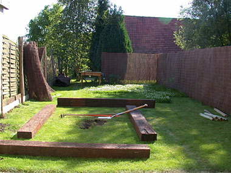

Vijver – Day One
maandag 14 juli 2003 | Persoonlijk
De mogelijkheid om een vijver aan te leggen, was een belangrijke vereiste bij het zoeken naar een huisje. Nu we ons na enkele maanden stilaan gesettled hebben, is de tijd eindelijk gekomen. Ik heb me deze week drie dagen verlof genomen om samen met Julie de hele klus te klaren…
Vandaag hebben we de hele dag rondgereden op zoek naar al het nodige materiaal: vier loodzware treinbalken (100kg), hoekijzers, houten paaltjes, worteldoek, folie, versterkingsplaten, waterpas, boormachine, 100kg zand, schop, spade, … en dat allemaal met de auto ;-)
